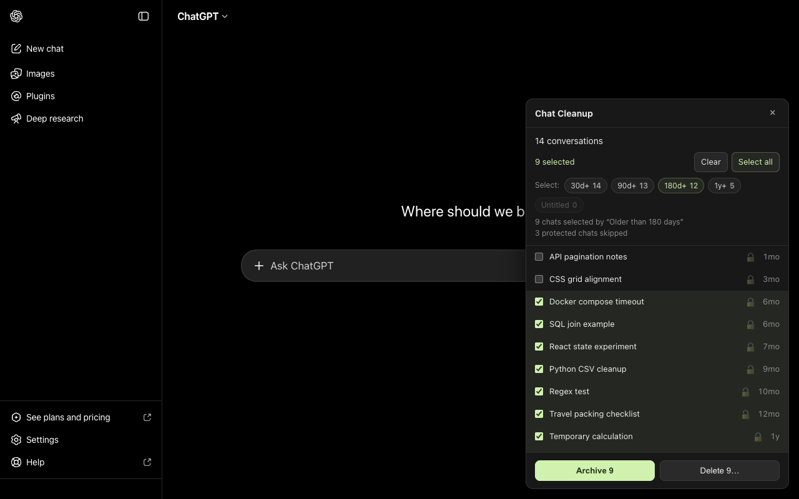

Bulk delete ChatGPT chats. Keep the ones that matter.
Select multiple conversations, find old chats by last activity, and review the exact list before archiving or deleting. Free for Chrome, with important chats excluded from bulk selection by default.

Clean up a batch. Keep the rest.
Choose which conversations to remove, even when your history is hundreds of chats deep.
One at a time
Useful for a single conversation. For a larger cleanup, each chat needs its own menu and confirmation.
Delete all chats
Permanent, and it takes the conversations you wanted to keep with it.
Chat Cleanup
Pick a batch by age or by hand. Review it. Archive or delete it. Free, with no paid per-chat quota.
How to delete multiple ChatGPT chats at once
Three steps, and nothing happens until you confirm it.
Select old chats
Find chats last active at least 30, 90, 180 or 365 days ago. Select them by hand, with Shift-click ranges or Select all. Project conversations are shown in expandable groups.
Bulk selection skips pinned chats, Project chats, manually protected chats and chats with unknown protection status. You choose which filters to apply; there is no AI importance scoring.
Review the exact list
See every selected title and the exact count before confirming. The Delete dialog clearly warns that the action is permanent.
Include a protected chat on purpose and the dialog names the override.
Archive or delete
Follow progress for each chat and see any failures. When ChatGPT accepts the archive requests, its sidebar and Archived chats list may still need several minutes to update.
Stop a running batch or reopen ChatGPT after an interruption to resume or discard the saved work.
Built for a ChatGPT chat history that got out of hand
Bulk delete
Remove a chosen subset permanently, after a confirmation that names every chat in it.
Bulk archive
Move selected chats out of regular history without deleting them. Restore them from ChatGPT settings.
Age filters
Find eligible chats last active at least 30, 90, 180 or 365 days ago.
Protected by default
Pinned chats, Project chats and your own marked chats stay out of bulk selection.
Shift-click ranges
Select a run of conversations the way you would in a file manager.
Resumable batches
Resume saved work after a reload. Uncertain outcomes are checked before another attempt.
Your chats stay between you and ChatGPT
Chat Cleanup processes your history in your browser and sends requests only to ChatGPT. Your chat data is not sent to us or to other services.
- No separate Chat Cleanup account, developer-operated backend or cloud sync.
- No analytics, trackers, ads or third-party data transfer.
-
Runs only on
chatgpt.com, through your own signed-in session. - Stores preferences, protections and unfinished batches in your browser.
- Asks for consent before it reads your history the first time.
- Checking a result can download a chat’s messages. Their content is not analyzed, retained or sent to the developer.
Questions people ask before cleaning up
Can I delete multiple ChatGPT chats at once?
Yes. Chat Cleanup lets you select a specific batch with checkboxes, Shift-click ranges or age filters, then review and confirm before deleting.
ChatGPT also offers individual deletion and Delete all chats under Settings → Data controls. Use Chat Cleanup when you want to choose a batch and keep the rest.
How do I delete all my ChatGPT chats?
To clear your history, ChatGPT provides Settings → Data controls → Delete all chats. This can also affect Project conversations and cannot be undone.
Use Chat Cleanup when you want to review a selected batch instead. Its bulk selection skips pinned, Project and manually protected chats by default.
Can I delete old ChatGPT chats but keep the important ones?
Yes. Age presets use the last activity date returned by ChatGPT, not just the creation date. They find eligible chats inactive for at least 30, 90, 180 or 365 days. Chats with an unknown activity date are not selected by age.
Bulk selection skips pinned chats, Project chats, manually protected chats and chats with unknown protection status. You can explicitly select a protected chat; the confirmation identifies that choice.
What is the difference between archiving and deleting a ChatGPT chat?
Archiving moves a conversation out of regular history without deleting it. You can unarchive it in ChatGPT under Settings → Data controls → Archived chats. List updates may be delayed.
Deleting is permanent and cannot be undone. If you may need a conversation again, choose Archive.
Why do chats still appear after archiving?
ChatGPT can report a chat as archived before its sidebar and Archived chats list update. Chat Cleanup reports the status received from ChatGPT. A chat may remain visible while ChatGPT updates its lists.
Wait before repeating the action. Then check Settings → Data controls → Archived chats. There is no guaranteed update time. If the chat still does not appear there, contact support and include any error shown in Chat Cleanup.
Can a deleted ChatGPT conversation be recovered?
No. Once deleted it is gone from your account and Chat Cleanup cannot bring it back; OpenAI's own retention policy governs what happens on their servers afterwards. That is why every destructive batch shows you the exact list first.
Is a ChatGPT bulk delete extension safe to install?
Check the extension’s permissions, privacy policy and confirmation flow. Chat Cleanup uses local extension storage, runs only on chatgpt.com and sends requests only to ChatGPT through your existing session. It has no developer-operated backend, analytics or advertising.
Result checks can download conversation detail responses, including messages. Their content is not analyzed, retained or sent to the developer. You see an access disclosure before loading history and review the selected chats before an action.
Does it work with ChatGPT Projects?
Yes. Available Project conversations appear in expandable groups. They are excluded from global bulk selection and age filters by default; you can explicitly select conversations in a Project.
Chat Cleanup changes conversations, not the Project itself. If ChatGPT does not return part of your history, the panel shows a warning; unavailable chats cannot be selected.
What happens if I close the tab in the middle of a cleanup?
The unfinished batch is saved locally in your Chrome profile. Reopen ChatGPT in the same account and workspace to resume or discard it.
A request already sent may finish after the tab closes. On resume, uncertain outcomes are checked before a retry; if the result cannot be established, it is reported rather than silently repeated.
Does deleting old chats make ChatGPT faster?
Chat Cleanup is designed to organize your history. It does not optimize ChatGPT’s response generation, and we do not promise faster replies after deleting old chats.
Can I export my ChatGPT chats before deleting them?
Chat Cleanup does not include an export feature. For eligible accounts, ChatGPT offers Settings → Data controls → Export data. Download and check the export before deleting conversations you want to keep.
Export availability depends on your account and workspace. See OpenAI’s export instructions for the current options.
Is there a limit on how many chats I can delete at once?
Chat Cleanup has no paid per-chat quota. You can select multiple available conversations and review the batch before confirming.
Large batches take time, and ChatGPT may limit requests. The extension backs off on temporary errors and pauses if it cannot continue. Saved work can be resumed later; repeatedly reopening the panel may generate more requests.
Which browser does Chat Cleanup work in?
It is built and tested for Google Chrome and is distributed through the Chrome Web Store. You need to be signed in to ChatGPT in the same browser.
Is Chat Cleanup free, and is it affiliated with OpenAI?
It is free. It is an independent extension and is not affiliated with, endorsed by, or sponsored by OpenAI.
Make room for the chats you want to keep
Free, and nothing is removed until you have seen the exact list and confirmed it.